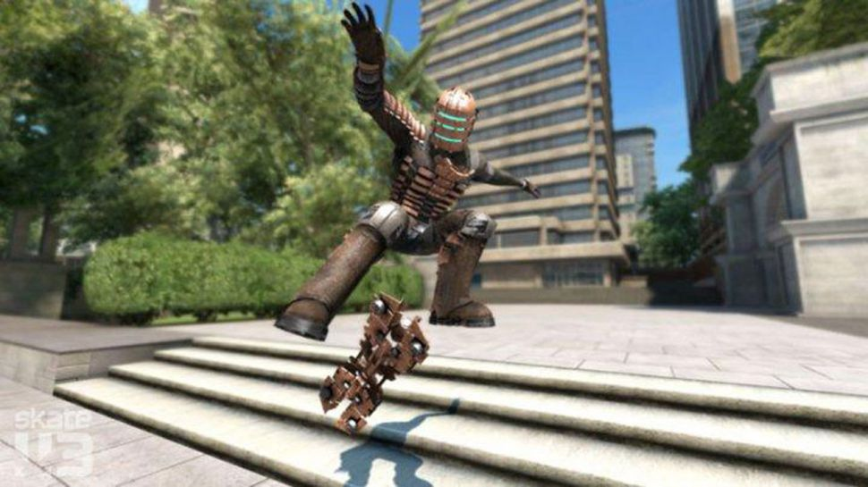

Skate 3 cheats
Despite coming out back in 2010, there hasn't been a skateboarding game released since that's been able to rival it, and knowing what Skate 3 cheats are available can spice up what is already an excellent extreme sports simulator. We're all eagerly hoping that one day Skate 4 will become a reality and update the series for a new generation, but until that time there's always this classic to fall back on. If you want some new playable characters to use, we've got you covered, and if you're looking for all of the Skate 3 cheat codes to unlock secret modes and items then we have them too. Grab your board, hit the streets, and pull out some sick moves with our complete guide for Skate 3 cheats.
(Image credit: EA)
Skate 3 Cheat Codes
To activate these Skate 3 cheat codes, you need to go through the Extras menu and navigate to the Enter Cheat Code option to type them in, where you'll receive a notification message if they've been input correctly. Note that these Skate 3 cheats will only work in Freeskate mode:
miniskaters - Everyone becomes tiny with a big head, feet, and arms
mcfly - Trucks and wheels are removed from boards, so they appear to hover. This is only a visual effect
deadspacetoo - Unlocks Isaac Clarke from the Dead Space series as a playable character
zombie - Adds a zombie light effect, while all pedestrians mimic zombie movements and will attack you
streetsweeper - Resets all movable objects to their original positions
dontbesomayo - Unlocks Miracle Whip sponsored clothing and objects
(Image credit: EA)
Skate 3 Unlockable Characters
As well as being able to access Isaac Clarke as a playable character by using the Skate 3 cheat code listed above, there are a couple more characters you can unlock by completing the Hall of Meat challenges and breaking plenty of bones. Dem Bones is a skeleton, while Meat Man is literally a gigantic chop of meat, and you can unlock both characters as follows:
Dem Bones - Beat over half of the Hall of Meat challenges
Meat Man - Beat every Hall of Meat challenge
So there we have it, all of the Skate 3 cheats and unlockable characters available in the game. Now get out there and start pulling off some gnarly tricks!